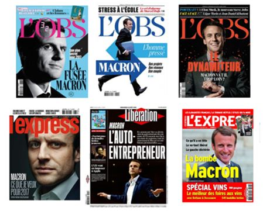
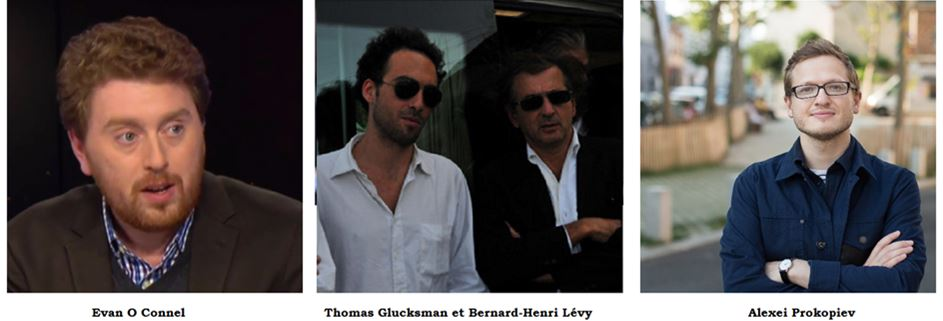

Entre le 25 janvier et le 23 avril 2017, la France subit à son tour une révolution colorée. Cette révolution est originale car il ne s’agit pas de renverser le pouvoir en place, mais au contraire, de maintenir les élites et l’idéologie qui dirigent la France depuis 40 ans. Cette originalité fait de la campagne présidentielle française, une répétition de la campagne américaine à la différence notable qu’aux États-Unis, la révolution colorée qui visait à maintenir les démocrates au pouvoir a échoué et se prolonge aujourd’hui pas une révolution de couleur qui vise par un harcèlement politique permanent et des manifestations violentes à chasser Donald Trump du pouvoir.
Pour comprendre cette révolution de couleur et le coup d’Etat d’Emmanuel Macron, il conviendra dans un premier temps de revenir sur le contexte de la présidentielle française
I CONTEXTE
En octobre 2016, au lendemain de la victoire de François Fillon aux primaires du parti les Républicains, tous les observateurs voient en lui le prochain Président français. François Hollande est rejeté voir détesté par les Français. Le programme de François Fillon est fondé sur une réforme économique radicale qui vise à sortir la France de l’ère socialiste dans laquelle le pays est rentré en 1981. Son programme est très critiqué par les partis de gauches, mais sa victoire semble assurée.
Le 16 novembre Emmanuel Macron est candidat à la Présidence. Le 1er décembre François Hollande annonce que lui-même ne sera pas candidat.
A partir de ce moment la totalité des médias français se met au service de la campagne d’Emmanuel Macron. La stratégie est simple : attaquer massivement et quotidiennement François Fillon tout d’abord sur la dureté de son programme social puis sur ce que les journalistes appellent le « Penelope Gate » à partir du 25 janvier 2017.
Le but est de discréditer le candidat des Républicains, jusque-là certain de l’emporter en obtenant dans le meilleur des cas un second tour contre Marine Le Pen, la candidate du Front National qui semble certaine d’y être présente. Il faut noter cette particularité du système politique français, qui est que tous les candidats ayant une chance d’être au second tour souhaitent affronter Marine Le Pen, étant ainsi certain d’emporter la victoire, comme Jacques Chirac contre Jean-Marie Le Pen à plus de 80 % le 21 avril 2002.
Lors de cette campagne les médias français attaqueront le Front National comme à son habitude, mais beaucoup moins que François Fillon, qui reste l’ennemi à abattre. Pour parfaire le plan, au début du mois d’avril, la presse française commence à présenter un autre candidat Nicolas Dupont-Aignan, candidat souverainiste de droite, comme une alternative au vote Fillon.
Malgré un soutien de sa base militante, François Fillon est finalement battu au premier tour par Emmanuel Macron et Marine Le Pen. Emmanuel Macron bat facilement et sans surprise Marine Le Pen au deuxième tour, 66 % contre 34 %
II LES PRINCIPES DE LA RÉVOLUTION COLORÉE FRANÇAISE
Concentration des moyens :
Emmanuel Macron dispose de la totalité du soutien des grands médias français. La totalité des chaines de télévision françaises publiques ou privées, la totalité des grandes radios publiques ou privées, la quasi-totalité des grands magasines à l’exception notable du périodique « Valeurs actuelles » et enfin la quasi-totalité des grands quotidiens y compris le « Figaro », réputé de droite.
Ce soutien s’explique de différente façon :
1 : 90 % des journalistes français votent à gauche.
2 : Les grands médias privés sont aux mains des amis d’Emmanuel Macron, comme la première chaine privée d’information BFMTV qui appartient à Patrick Drahi, un milliardaire qui garde un très bon souvenir d’Emmanuel Macron comme ministre de l’économie. Egalement le journal « Le Monde » qui appartient à un autre oligarque, « Pierre Berger », militant homosexualiste notoire qui souhaite autoriser la GPA en France, notamment pour les couples homosexuels.
3 : Des instituts de sondage. Les instituts de sondage appartiennent pour la plupart à des amis d’Emmanuel Macron et se chargent de faire passer Emmanuel Macron, d’un simple inconnu à un vainqueur potentiel. Il faut souligner qu’en France, les instituts de sondage visent avant tout à canaliser le vote. Ce phénomène avait été observé lors de la campagne présidentielle américaine et également lors des élections parlementaires en Russie en septembre 2016. L’institut « Levada », proche des milieux occidentaux donnait Russie Unie entre 30 et 40 % alors que le parti obtint 55 %.
Utilisation des ressources administratives :
Le régime socialiste, en plus du soutien des oligarques français, bénéficie du contrôle du système judiciaire français. Les procureurs et les juges français vont se précipiter sur François Fillon prioritairement puis sur Marine Le Pen. Pour cela François Hollande a créé en décembre 2013, le Parquet National Financier qui est l’organe utilisé pour attaquer les adversaires politiques du régime socialiste. Il faut souligner que les juges et les procureurs en France sont idéologiquement à l’extrême gauche. Ajoutons enfin que le régime organise des fuites vers la presse contre le principe du secret de l’instruction. Cette parfaite coordination entre système judiciaire et médias restera sans doute un modèle du genre.
Enfin la mobilisation de la « société civile »
Etant donné le contrôle total du Régime oligarquo-socialiste sur les médias, cette mobilisation a été beaucoup moins nécessaire et beaucoup moins importante qu’en Ukraine en 2014 ou en Russie en 2011. On peut retenir cependant un élément révélateur. Le 9 avril 2017 François Fillon organise une manifestation place de la Concorde ou il rassemble environ 80000 personnes. Au même moment environ 300 personnes se rassemblent « contre la corruption » place de la République.
Quelques remarques sur cette manifestation :
1 : François Fillon n’était pas accusé de corruption mais d’emplois fictifs. L’accusation de corruption est une accusation générique que l’on retrouve dans toutes les révolutions colorées. Elle permet principalement de ne pas parler ni des idées ni des programmes. C’est notamment le cas d’Alexei Navalny en Russie. Il n’est pour lui jamais question du modèle économique libéral ou socialiste. Les activistes des révolutions colorées refusent tout débat économique, politique ou historique. Leur adversaire est un ennemi immoral qu’il faut détruire.
2 : Les organisateurs sur les réseaux sociaux de cette manifestation, qui est d’ailleurs un échec sont trois. Un anglo-français assez insignifiant Evan O Conell, militant anti-Brexit et anti-Trump, Thomas Glucksman, ancien conseiller de Mikhail Saakhachvili, activiste sur Maïdan et militant anti-Poutine acharné. Et enfin le Russe Alexei Prokopiev, installé à Paris, fondateur du mouvement « Russie Liberté » soutient de toutes les révolutions colorées. Nous avons donc à faire à une nouvelle sorte de néo-Komintern, chargé de porter la révolution colorée partout dans le monde.
III CONTRE-ATTAQUES ET ÉCHEC DE LA CONTRE-RÉVOLUTION
La question qui se pose au lendemain de ce véritable coup d’Etat est de savoir s’il est possible de se défendre face une telle concentration de moyens. Pourquoi François Fillon a-t-il perdu, là où Donald Trump a triomphé ? Les Démocrates contrôlaient également les médias, la police et la justice. Trump lui aussi a été trahi par les propres membres de son parti.
Plusieurs explications peuvent être données. Donald Trump a pu bénéficier de quelques médias de grande écoute favorable, de la même manière que le Brexit fut soutenu par un journal très populaire comme « The Sun ». La France représente un cas assez unique où toute la grande presse est totalement sous contrôle financier et idéologique de « la Gauche ».
La raison fondamentale est que François Fillon s’est très mal défendu. Au lieu comme Trump de démasquer publiquement le mensonge des médias et l’instrumentalisation des juges, il n’a cessé de respecter ces institutions qui ont grossièrement bafoué notre démocratie. Soit François Fillon a sous-estimé l’évolution totalitaire et liberticide du Régime oligarquo-socialiste, soit il a voulu se ménager une porte de sortie en cas d’échec. Sans doute un peu des deux.
CONCLUSION :
Pour conclure je voudrais dire que cette élection est aussi le résultat de l’évolution du système éducatif français durant ces 40 dernières années. La perte des connaissances de base en Histoire, en Philosophie, en littérature a permis la victoire au premier tour d’Emmanuel Macron. C’est aussi cela la victoire du Régime socialiste, la dépolitisation d’un peuple éminemment politique.
La bonne nouvelle c’est que seulement 24 % des Français ont eu une conscience politique suffisamment amorphe pour voter Emmanuel Macron au premier tour, le deuxième tour joué d’avance ne comptant pas. Seul 24 % des Français ont voté pour un candidat creux avec un programme vide. Seul 24 % des Français ont cru en ce candidat qui leur disait de « PENSER PRINTEMPS ». Il y eu une époque du printemps des peuples, la France a inventé le peuple du printemps. C’est bien sûr déjà beaucoup trop, mais finalement 76 % des Français croient encore que la politique n’est pas une affaire de marketing et peut encore changer leur destin.


Partager cette page